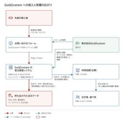
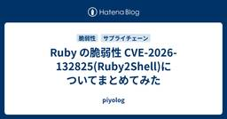
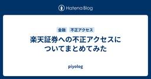
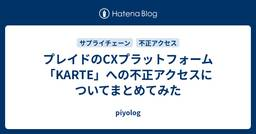

piyolog
https://piyolog.hatenadiary.jp/
piyokangoの備忘録です。セキュリティの出来事を中心にまとめています。このサイトはGoogle Analyticsを利用しています。
フィード

デジタル庁が運用するGSSのファイル共有サービスからの情報漏えい可能性についてまとめてみた 1
1
piyolog
2026年11月20日、デジタル庁はガバメントソリューションサービス(GSS)で提供しているファイル共有サービス上のファイルの一部が外部に漏えいした可能性があると公表しました。ここでは関連する情報をまとめます。会議資料などを組織外とも共有するサービスGSSはデジタル庁が運用する政府共通のネットワーク環境で、2021年から導入が始まった(出典: 1, 2)。デジタル庁をはじめ総務省、経済産業省、法務省、金融庁、原子力規制委員会など25の政府機関が利用し(出典: 2, 3)、利用者は約15万人にのぼる(出典: 2)。外務省や防衛省は使っていない(出典: 2)。GSSで扱える情報は政府が規定する3段階の機密性のうち機密性2までに限られる(出典: 2)。ファイル共有サービスはGSSを利用する政府機関等向けに提供されており、利用者同士や事業者等の組織外の関係者との間で会議資料等の大容量のファイルの共有等に使われている(出典: 1)。共有の相手には地方自治体や企業が含まれ(出典: 3)、ファイル共有は民間のクラウドサービスを活用している(出典: 3)。GSSをめぐっては9月にもデジタル庁が不正アクセスによる個人情報の漏えいの可能性を公表している(出典: 2)。*1piyolog.hatenadiary.jp共有相手先以外からのアクセスでサービス停止デジタル庁は11月12日、正規の共有相手先以外の者からのファイルへのアクセスがなされた可能性を検知し、調査を開始(出典: 1)。現時点までの調査で7月30日から11月12日までの間にこのアクセスがあったことを確認し、期間の詳細は現在も調べている(出典: 1)。アクセスは複数回あったとみられる(出典: 3, 6)。*2検知後すぐにこのサービスと外部との通信を遮断し、以後は外部からのアクセスを防止している(出典: 1)。同日にサービスの提供を停止し(出典: 1)、現在もファイルの共有はできない(出典: 6)。GSSファイル共有サービスの関係と対応 漏えいの可能性があるファイルは調査中デジタル庁は11月20日、アップロードされていたファイルの一部が外部に漏えいした可能性があり、個人情報が含まれることも想定されると公表(出典: 1)。ファイルの件数や内容は調査中で(出典: 2)、機密性が高い文書の漏えいの有無も調べている(出典: 3, 6)。
1日前

受注管理システム「GoQSystem」への不正アクセスについてまとめてみた
1
piyolog
2026年11月12日、GoQSystemは同社のシステムが外部の第三者による不正アクセスを受け、預かっている注文データ(個人情報を含む)の一部が外部に持ち出されたと公表しました。ここでは関連する情報をまとめます。注文データの一部を外部に持ち出し受注管理システム「GoQSystem」を提供する株式会社GoQSystemは2026年11月12日、同社システムへの不正アクセスで、預かっている注文データ(個人情報を含む)の一部が外部に持ち出されたことを確認したと公表。不正アクセスの発生期間は11月10日から11日で、対象には期間より前の注文も含む(出典: 1)。11月13日の第二報時点で、対象は店舗(企業)1,694社、注文4,984,595件、個人情報の人数(本人数)4,367,390名。いずれもGoQSystem全体の値(出典: 2, 8)。漏えいした項目は注文者と届け先の次の情報など。クレジットカード情報はGoQSystemが保有しておらず、漏えいはない(出典: 1)。氏名住所電話番号メールアドレス注文内容GoQSystem への侵入と影響の広がり お問い合わせフォームの脆弱性を悪用GoQSystemは11月13日、外部の第三者が同社システムに設置していたお問い合わせフォームの脆弱性を悪用して不正にアクセスしたと公表。店舗側の設定や操作に起因するものではないとしている*1 (出典: 2)。遮断以降の動きは次のとおり。11月11日10時36分、不正アクセスの経路を遮断(出典: 1)同日10時55分、サービスを一時停止。11月12日の公表時点では緊急対策を講じたうえで接続元を限定して再開している(出典: 1)11月13日の時点で、お問い合わせフォームは削除済み。管理画面へのIPアドレス制限は当面の間継続(出典: 2)GoQSystemは11月15日、同社を装った偽サイトや不審なメールが類似ドメインで作られるおそれがあるとして注意を呼びかけ。正規のドメインとして公式サイトのgoqsystem.comと管理画面のorder.goqsystem.comを示し、類似ドメインの作られ方として文字の置き換え、文字の抜け、重複、入れ替え、単語やハイフンの追加、末尾の違い(「.com」の部分を別の文字列に変える)を例示している。偽サイトによる被害は現時点で確認されていない(出典: 4)
1日前

Ruby の脆弱性 CVE-2026-132825(Ruby2Shell)についてまとめてみた 30
piyolog
2026年11月18日、Ruby は文字列の大文字小文字変換に見つかった脆弱性(CVE-2026-132825、通称 Ruby2Shell)を修正した版を公開しました。ここでは関連する情報をまとめます。どんな脆弱性が確認されたの?Ruby の文字列の大文字小文字変換に、1バイトのヒープバッファオーバーフローが確認された。ISO-8859-1 や Windows-1252 などの一部の1バイト文字コードで、細工した文字列の大文字小文字を変えるとバッファの末尾を1バイト越えて書き込まれる。Ruby は一部の状況で RCE に至る PoC を把握しているとしている(出典: 1, 2, 28)。Rails と classic スタイルの Sinatra では既定の構成のまま認証前に攻撃者の文字列が脆弱な処理へ届く。解析ページ「Ruby2Shell」を公開した Veria Labs がそう公表し、独自に発見した研究者(以下、解析した研究者)が経路を解析し、Semgrep が実行時に確認している(出典: 30, 31, 32)。実環境での悪用の報告はなく、CISA の SSVC は Exploitation を none としている(出典: 28, 32)。脆弱性概要CVE CVE-2026-132825(通称 Ruby2Shell は Veria Labs の呼称) CVSS 7.4 ～ 9.8。評価主体ごとに異なり、Ruby は Critical CWE ・CWE-193(Off-by-one Error。Ruby の GHSA)・CWE-122(ヒープベースのバッファオーバーフロー。MITRE) 悪用時影響 任意コード実行、またはプロセスのクラッシュ(DoS) ßの大文字化で出力バッファを1バイト超過欠陥があるのは ISO-8859-1、2、3、4、9、10、13、14、15、16 と Windows-1250、1252、1254、1257 の14種の1バイト文字コードの大文字小文字変換(出典: 12, 31, 32)。UTF-8 は別の処理になり影響を受けない(出典: 30)。ß(0xDF)には1バイトの大文字がなく、大文字化では「SS」の2バイトを書く(出典: 31, 32)。ループの境界検査は出力バッファの空きを1バイト分しか見ておらず、バッファの1バイト先に書き込
1日前

北海道3市町委託先のマルウェア感染についてまとめてみた 24
piyolog
2026年11月18日から19日にかけて、北海道の岩見沢市、新得町、留萌市が委託先の協力会社の端末がマルウェアに感染し、委託したデータが漏えいした可能性があると公表しました。ここでは関連する情報をまとめます。3市町の委託データに漏えいのおそれ岩見沢市と新得町は2026年11月18日、留萌市は19日に、GIS北海道に委託した業務のデータが漏えいしたおそれがあると公表。データはGIS北海道の協力会社である有限会社リムゲートの端末に保存されており、端末のマルウェア感染で漏えいした可能性がある。3市町とも現時点で外部への漏えいや不正利用は確認しておらず、対象データにマイナンバーは含まれない(出典: 1, 2, 3)。市町 委託業務 漏えいのおそれがあるデータ 公表日 留萌市 統合型GIS導入事業(2020年8月委託) ・住民基本台帳データ 最大71,002件(2022年2月3日時点)・要支援者データ 最大4,503件(2022年3月時点) 11月19日 岩見沢市 土地の調査業務*1 ・固定資産税の土地情報 最大10,348筆・固定資産税の家屋情報 最大7,037棟(いずれも2022年1月1日現在) 11月18日 新得町 災害時避難行動要支援者システム導入委託業務(2019年度) ・住民基本台帳データ 総件数6,001件・災害時避難行動要支援者データ 986件(いずれも受託作業時点) 11月18日 留萌市の住民基本台帳データの項目はシステム上の識別番号、世帯番号、世帯主名、氏名、住所、性別、生年月日、前住所、転出先住所、各届日など。要支援者データの項目は障害の区分、身体障害、知的障害、精神障害、要介護度、氏名、住所、生年月日、情報提供の同意の有無など(出典: 1)。岩見沢市の土地情報の項目は土地所在地、現況地籍、現況地目、所有者、評価単価など。家屋情報の項目は現況用途、住宅戸数、現況延床面積、居住部床面積などで、所有者氏名等の個人を特定する情報は含まれない(出典: 2)。3市町のデータが協力会社の端末に保存留萌市とGIS北海道の契約は2022年3月末までで、終了後は削除する取り決めだった(出典: 9)。契約終了後もリムゲートの端末に留萌市の個人情報が保存されていた(出典: 1)。留萌市は協力会社へのデータ共有についてGIS北海道から報告がなく把握していなかったとしている(出典
2日前

11月に修正されたPHPの脆弱性についてまとめてみた 135
piyolog
2026年11月19日、PHPの開発元であるThe PHP Groupは4系統のセキュリティリリース(PHP 8.5.13、8.4.28、8.3.37、8.2.36)を公開し、複数の脆弱性を修正しました。ここでは関連する情報をまとめます。どんな脆弱性が修正されたの?The PHP Groupは11月18日、19日14時から14時30分(協定世界時、日本時間23時から23時30分)にセキュリティリリースを行うと予告(出典: 2)。最高の深刻度の CRITICAL は「既定ではない設定または一般的ではないセットアップ」が条件と説明していた*1。国内ではIPAが19日に事前準備を呼びかけ、今回は10月の予告時と異なり「デフォルトではない設定、または、一般的ではないセットアップ」で影響するものと記載されていると伝えた(出典: 22)。国家サイバー統括室も同日18時37分、X で「前回とは異なり、本脆弱性の影響を受けるのは一部の環境に限定されるとのことです」と伝え、必要に応じて修正パッチを適用できるよう準備を求めた(出典: 23)。ChangeLog に記載された GHSA(GitHub Security Advisory)は 8.5.13 が17件、8.4.28 が14件、8.3.37 が13件、8.2.36 が12件(出典: 4)。17件の深刻度は Critical が7件、High が4件、Moderate が6件で、いずれも CVSS v4 による。このほか 8.5.13 では URI 拡張で使う uriparser を 1.0.3 に更新し、CVE-2026-48841 を修正した(出典: 4)。同じ19日に公開された PHP 8.6.0 の ChangeLog にも同じ17件の GHSA が記載されている(出典: 4)。GHSA CVE 深刻度 対象機能 主な前提 影響する系統 GHSA-658j-r8rw-q6mx CVE-2026-115560 Critical(9.2) セッションの upload progress シリアライザーの異なる設定がセッション保存先を共有 8.2〜8.5 GHSA-fm2m-fjf5-v3cp CVE-2026-126714 Critical(9.2) セッションの files ハンドラー セッションの内容に影響を与え、files
2日前

物流代行サービス「オープンロジ」への不正アクセスについてまとめてみた
16
piyolog
2026年11月11日、物流代行サービスのオープンロジは同社のシステムが外部の第三者による不正アクセスを受け、保有する出荷データに含まれるお届け先の個人情報などが外部に持ち出されたと公表しました。その後、荷主や委託元の多数が自社の顧客や届け先への影響や影響の可能性を公表しています。ここでは関連する情報をまとめます。出荷データの一部持ち出しオープンロジは11月11日の第1報で不正アクセスと出荷データの持ち出しを公表し(出典: 1)、17日の第2報で2017年10月までさかのぼる期間などを対象に加えた(出典: 2)。出荷データは同社に出荷を委託する荷主ごとのもの(出典: 2)。オープンロジの公表にある経過は次のとおり(出典: 1)。11月8日から9日、外部の第三者がオープンロジのシステムに不正アクセス同社が保有する出荷データの一部を外部に持ち出し11月9日、把握していた不正アクセスの経路を遮断(以降、新たな不正アクセスは確認されていない)。あわせて緊急メンテナンスを実施原因と侵入経路は外部の専門機関と調査中(出典: 1)。*1荷主の告知では、Brave groupが11月10日にオープンロジから連絡を受け(出典: 8)、BONXが11日に報告を受けている(出典: 4)。第2報はメンテナンスに伴う一部のシステム停止時間(21時から6時)を除き、荷主からの入荷、出荷の依頼と倉庫での入荷、出荷の業務を通常どおり行っていると説明する。同時点で、情報の不正利用や二次被害は確認されていない(出典: 2)。攻撃元の遮断と国外からのアクセス制限オープンロジの公表にある対応は11月9日の経路の遮断、緊急メンテナンス、必要な対策の実施、アクセス管理や監視体制の強化など情報セキュリティ対策の見直し(出典: 1, 2)。荷主の告知はオープンロジからの報告として次の対応を伝える。攻撃元の遮断(出典: 3, 5, 6, 9)日本国外からのアクセス制限(出典: 3, 5, 9)全ユーザーのログイン状態のリセット(出典: 3, 6, 9)不正なアカウントの削除(出典: 5, 6, 9)認証キーの無効化(出典: 9)緊急メンテナンスによるシステム対応と脆弱性の修正(出典: 6, 9)荷主側でも認証情報の再設定が行われた。アデリアは11月10日にオープンロジ管理画面のログインアカウント等の認証情報をリセッ
2日前

日本版DBSのシステムで見つかった脆弱性についてまとめてみた
20
piyolog
2026年11月18日、こども政策担当相は日本版DBSの専用システム「こまもろうシステム」で深刻な脆弱性が多数見つかったとして、システムでの運用を当面行わないと表明しました。ここでは関連する情報をまとめます。日本版DBSの手続を担う「こまもろうシステム」「日本版DBS」を含むこども性暴力防止法は2026年12月25日に施行される。犯罪事実確認、定期報告、認定などの手続は開発中の専用システム「こまもろうシステム」でオンライン実施すると、こども家庭庁支援局長通知が示していた(出典: 1, 7)。こども家庭庁は施行後の法に基づく全ての事務手続をシステム経由で行うとしていた(出典: 3)。システムでできることは次の5項目(出典: 2)。犯罪事実確認: 事業者による従事者情報の登録や犯罪事実確認書の交付申請、従事者による戸籍情報の登録など認定申請: 国の認定を取得するための申請情報管理措置: 情報管理規程の提出などこまもろうマークの取得: マークのデータのダウンロード(認定事業者は認定後に可能)監督: 帳簿の管理、定期報告の実施など事業者の申請を受けたこども家庭庁が対象者の性犯罪歴を法務省に照会し、犯歴の有無を記した確認書を事業者に交付する(出典: 5, 12)。こども家庭庁によると、システムの開発は委託先の三菱総研DCSが2025年7月から担っており、開発費は2年間で約50億円に上る(出典: 8, 12)。稼働前のAI点検で深刻な脆弱性を多数発見2026年10月26日の第1回サイバーセキュリティに関する関係閣僚会議で、首相は各大臣に「高性能AIを用いた脆弱性チェック」の前倒し実施と、担当する府省庁の「システムの安全確保」の徹底を指示(出典: 4)。*1相次ぐ不正アクセス事件を受けて、こども家庭庁は11月4日からAIを用いてシステムを点検し、11月12日に深刻な脆弱性が多数見つかった(出典: 6, 7, 8, 12)。この点検は10月26日の首相の指示を受けて始まったと報じられている(出典: 6)。担当相は診断結果の速報を同日に受けた(出典: 9)。見つかった脆弱性は外部から不正アクセスされる恐れのあるものとされる(出典: 5)。*2システムでの運用を当面見送り11月18日夕、担当相は内閣府で記者団に「深刻な脆弱性が多数発見された。システムの運用は当面行わない」と説明した(出
3日前

NGINXの脆弱性 CVE-2026-123633、CVE-2026-123007についてまとめてみた 134
piyolog
2026年11月19日、国家サイバー統括室はWebサーバーnginxにリモートから未認証で任意のコード実行等が可能となる脆弱性が公表されたとして、対象環境の運用管理者に速やかなアップデートの適用等を求める注意喚起を行いました。ここでは関連する情報をまとめます。どんな脆弱性が確認されたの?nginx.orgとF5は11月18日、NGINXのHTTP/2の実装(ngx_http_v2_module)の脆弱性2件を公表。nginx 1.30.7(stable)と1.31.9(mainline)のリリースでこの2件を含む計10件の脆弱性を同時に修正した。(出典: 1, 2, 3, 4)WizとXintは2件とも、MetnirはCVE-2026-123633、Rapid7とIkotas LabsはCVE-2026-123007を、それぞれ独立に発見してF5に報告した。(出典: 1, 2, 9)2件とも、認証不要でネットワークから細工した通信を送ることで、workerプロセスのクラッシュ(DoS)や、条件を満たす場合のコード実行を起こせる。CVE-2026-123007はHTTP/2を使う構成が対象。CVE-2026-123633はクライアント接続にHTTP/2を使い、リクエストをバックエンドへ中継する構成で、worker_connectionsが不足する場合に限る。コード実行はASLRが無効か、ASLRを回避できる場合に可能。F5は制御プレーンへの露出はなく、データプレーンの問題のみとしている。(出典: 1, 2, 6, 7)国家サイバー統括室は11月19日、公式Xの注意・警戒情報で注意喚起を投稿した。投稿のリンク先は発見者の解説記事で、2件のCVE番号が含まれる。(出典: 8)JPCERT/CCはCyberNewsFlash、IPAは重要なセキュリティ情報として、11月19日にnginxの複数の脆弱性について公表。(出典: 14, 15)脆弱性概要項目 CVE-2026-123633 CVE-2026-123007 種別 HTTP/2の接続管理のuse-after-free(CWE-416) HTTP/2フロー制御の整数アンダーフロー(CWE-191)、領域外書き込み(CWE-787) CVSS(基本値) v3.1 8.1（High）、v4.0 9.2（Critical）*
3日前

OpenJDK の脆弱性 CVE-2026-114938(Java4Shell)についてまとめてみた 17
piyolog
2026年11月17日、OpenJDK は Java の実行環境 HotSpot における Base64 デコード処理の脆弱性(CVE-2026-114938、通称 Java4Shell)の修正と脆弱性情報を公開しました。ここでは関連する情報をまとめます。どんな脆弱性が確認されたの?HotSpot の Base64 デコード処理のうち、x86-64 向けの AVX-512 VBMI 組み込み実装にヒープバッファオーバーフロー(CWE-122)が確認された(出典: 7, 18)。OpenJDK のアドバイザリは影響を受けるコンポーネントを hotspot/compiler としている(出典: 1)。Oracle はネットワーク経由の認証なしの攻撃者による乗っ取り(takeover)に至りうると記述し、悪用は困難(Difficult to exploit)としている(出典: 2, 18)。個別のアプリケーションではなく Java の実行環境側の欠陥で、Base64 でエンコードされた外部入力をデコードする処理を通じて到達する。この組み込み実装は2023年1月の OpenJDK 17.0.6 から含まれている(出典: 7, 27)。発見者の Calif は製品での認証前のリモートコード実行(RCE)を実証したと報告している(出典: 23)。カナダのサイバーセキュリティセンター(CCCS)は11月17日の公表時点で、JPCERT/CC は11月18日時点で実際の攻撃への悪用を把握していない(出典: 20, 21)。CISA の KEV にも11月17日時点で未登録。脆弱性概要CVE CVE-2026-114938(通称 Java4Shell は Calif の呼称) CVSS ・8.1(CVSS 3.1、AC:H。OpenJDK と Oracle)・9.2(CVSS 4.0。Calif)・9.8(CVSS 3.0 の暫定値、AC:L。Red Hat) CWE CWE-122(ヒープベースのバッファオーバーフロー) 悪用時影響 認証なしのネットワーク経由で、JVM のクラッシュ、メモリ内の情報の読み出し、コード実行 Oracle は報告者として Calif を含む複数名を記載。Calif は自社が脆弱性を発見し報告したと表明している(出典: 2, 28)。欠陥はデコーダの末尾
3日前

楽天証券への不正アクセスについてまとめてみた 369
piyolog
2026年11月17日、楽天証券は第三者による不正アクセスに伴い、保有する顧客情報の一部が漏えいした可能性があると公表しました。ここでは関連する情報をまとめます。テスト環境から顧客情報漏えいのおそれ楽天証券は11月16日に一部システムへの第三者による不正アクセスの可能性を検知し、該当箇所へのアクセスを遮断して修正などを実施。その後の調査で、テスト環境のシステム内で管理していた情報の一部が11月11日に外部へ漏えいしたおそれがあると判明した(出典: 1)。*1不正アクセスを受けたのはテスト用のサーバー(出典: 3)。ログインに必要なパスワードや暗証番号など、取引に必要な情報の漏えいは確認していない。公表時点で、本件に起因すると考えられる不正アクセスや不正取引も確認されていない(出典: 1)。影響が確認された顧客はすでに特定済みで、該当する顧客には個別に報告するとしている(出典: 1)。システム更新のためテスト環境に顧客情報を保管テスト環境で使うのは通常ダミーデータやマスキング処理したデータだが、今回は社内システムの更新に伴い、退会者の情報を含む実際の顧客情報を一定期間置いていた(出典: 1, 2, 3)。広報はシステムのアップグレード時に本番環境のデータで動作確認する必要があったためと回答している(出典: 4)。このテスト環境は新サービスの提供やお知らせの掲載前の確認に使っていたもので、誰もが自由にアクセスできるものではないという(出典: 4)。テスト環境からの情報漏えいのおそれの流れ 漏えいのおそれがある情報は2区分漏えいのおそれがある情報は含まれる項目と口座数によって2つの区分に分かれる(出典: 1)。広報によると2区分に重複はなく(出典: 4)、合計すると最大約1,572万口座分になる(出典: 2)。区分 口座数 情報項目 区分1 最大約447万口座 ・部店・お客様コード・ログインID・氏名、カナ氏名・生年月日・住所・電話番号・メールアドレス・勤務先・出金先口座(金融機関、口座番号、名義人)・年収、金融資産(顧客の申告情報)・商品別資産情報・最終ログイン日 区分2 最大約1,125万口座 ・部店・お客様コード・ログインID 区分1の商品別資産情報は株式、投資信託、預かり金など項目ごとの残高を指す。含み損益、保有銘柄、取引履歴は含まず、マネーブリッジ(楽天銀行との
4日前

プレイドのCXプラットフォーム「KARTE」への不正アクセスについてまとめてみた 83
piyolog
2026年11月16日、プレイドは同社が提供するCXプラットフォーム「KARTE」*1 への第三者による不正アクセスにより、利用企業のアカウント情報などが漏えいしたと公表しました。ここでは関連する情報をまとめます。サーバーの脆弱性を悪用し認証情報の窃取プレイドは11月13日、KARTEへの第三者による不正アクセスを検知したとして全サービスの停止を公表(出典: 1, 2)。さらに16日に情報の漏えいを確認したと調査結果を公表した(出典: 3)。システムへの侵入は13日未明。経緯は次のとおり(出典: 3, 4)。複数の経路に断続的に攻撃を試み、最終的にデータを取得するための公開経路における一部の内部処理の脆弱性を悪用して、システムやデータベースの接続用認証情報を窃取データベース等からデータを外部に読み出し窃取した認証情報を用いてプレイドのアカウントを乗っ取り管理画面へ不正アクセス*2遮断以降、プレイドのシステムへの新たな不正アクセスは確認されていない(出典: 3)。13日の対応は次の順で進んだ。8時59分に不正アクセスを検知し、窃取された認証情報の無効化等を実施*314時27分頃からサーバーの停止を開始し、KARTEの全サービスをメンテナンスモードに切り替えて順次停止。KARTE Statusの告知は14時44分15時23分頃までに、攻撃元からの通信の遮断などの封じ込め対応を完了(出典: 2, 3)プレイドは15日10時37分の投稿で、全サービスの停止は緊急措置と説明。対象環境のネットワーク遮断は完了し、継続的な情報流出は食い止められている状態としている(出典: 2)。預かった情報の漏えいは4分類プレイドは11月20日、19日までに調査を完了し、影響範囲と対象件数の特定を終えたと公表。漏えいした、またはその可能性がある情報は企業から預かった情報と、同社が自社のために保有していた情報に分かれる。対象の企業には個別に連絡している(出典: 3, 4)。企業から預かった情報は次の4分類で、解析データとキャッシュデータは16日の公表になく20日に加わった。どの情報がどの程度含まれるかは対象企業ごとに異なる*4 (出典: 3, 4)。KARTEに連携したデータの一部(570社)。企業が自社で保有するデータをKARTEで活用するために連携していたもので、企業によっては個人情報を含むエ
4日前

電子マネー基盤「Pokepay」への不正アクセスについてまとめてみた
3
piyolog
2026年11月14日、ポケットチェンジは電子マネー基盤「Pokepay」(Enterprise)のシステムに対する第三者からの不正アクセスを確認し、全サービスを一時停止したと公表しました。この影響を受けて、大学生協電子マネーや自治体のデジタル地域通貨などのサービスも停止しています。ここでは関連する情報をまとめます。Pokepay(Enterprise)の全サービスを予防的に停止2026年11月14日、ポケットチェンジはPokepay(Enterprise)のシステムに対する第三者からの不正アクセスを確認した。予防的措置として同日20:00からPokepay(Enterprise)の全サービスを一時停止。ショップ向けのPokepayは停止しておらず、通常どおり利用できるとしている(出典: 1, 2)。再開予定は11月15日9:00で、のち15:00に変更(出典: 1, 2)。福井県の発表では、ポケットチェンジは14日20:00に15日9:00までの停止を決めてふくいのデジタルに連絡し、15日未明に15:00までの延長を決定した(出典: 4)。ポケットチェンジは11月15日16:40、Pokepay(Enterprise)を再開した。停止期間中にシステムの安全性の確認と必要なセキュリティ対策を実施したと説明している。外部システムとの連携に追加の安全対策を行っているため、一部の外部連携機能は引き続き利用できない(出典: 3)。調査結果は内容を精査のうえ改めて報告するとしている(出典: 3)。*1複数団体のサービス同時停止11月14日20:00ごろから、Pokepayの導入先と報じられた団体のサービスが一斉に停止した(出典: 5, 6)。停止を公表したのは大学生協電子マネー、ふくアプリ(はぴコイン)、ほくペイ、ハチペイ、めぶくPayなど。再開は15日夕方から16日にかけて団体ごとに進んだ。Pokepayの導入先として、ハチペイ、ほくペイ、ふくいはぴコイン、大学生協電子マネーなどが報じられ(出典: 5)、続報ではめぶくPayも挙げられた(出典: 6)。ふくいのデジタルはふくアプリの決済基盤であるPokepay(運営: ポケットチェンジ)のシステムで不正アクセスが確認されたと公表し、福井県も同旨を発表している(出典: 4)。組織名(サービス名) 停止の理由 個人情報の漏えい(
4日前

スーパーコンピューター「富岳」への不正アクセスについてまとめてみた
202
piyolog
2026年11月16日、スーパーコンピューター「富岳」が外部から不正アクセスを受けたことが明らかになりました。理化学研究所は同日に公表し、利用者には前日にメールで通知しています。ここでは関連する情報をまとめます。公開ダッシュボードから内部システム侵入理研が運用する富岳の運用系システムに、外部の第三者が10日から13日にかけて侵入(出典: 1)。*1理研の調査で判明した攻撃の内容は次のとおり(出典: 1)。インターネット上に公開されていた富岳の稼働状況を表示するウェブページ(ダッシュボード)を足がかりに、運用系の内部ネットワークへ侵入内部の複数のサーバーを不正に操作利用者の認証システムに登録された情報と、ホームディレクトリのファイルの一部を外部へ持ち出し(その可能性を含む)侵入したサーバーの一部に不正なプログラムを設置するなど、システムを改ざん取得した認証情報の一部を使い、ほかのシステムへの接続を試行接続試行に伴う二次被害の有無と改ざんの詳細は調査中(出典: 1)。不審な通信の検知と運用停止当該運用システムの保守管理は外部に委託されている。理研は12日に不審な通信を検知し、委託先と連携して調査を開始。13日午後4時33分、調査で不正アクセスの事実を確認(出典: 1)。確認後の措置は次のとおり(出典: 1)。13日午後10時7分、侵入に使われたシステムを隔離14日午前4時30分、運用を停止して外部からのアクセスを遮断14日午後8時20分、管理用の鍵を入れ替え15日午後4時18分、利用者へのメール送信と同時に実行中と待機中の計算ジョブをすべて停止し、全利用者のログイン用の公開鍵を無効化富岳への不正アクセスと理研の対応 利用者情報とファイルの持ち出し理研は次の2種類の情報について外部への持ち出し、およびその可能性があるとしている(出典: 1)。利用者の認証システムに登録された情報: 富岳の利用者最大4,222名の氏名、メールアドレス、IDと、AI for Science開発用のスーパーコンピューター「理究(りきゅう)」の利用者最大375名の氏名、メールアドレス(対象は合計で最大4,597名)利用者のホームディレクトリに保存されていたファイルの一部: 利用者が保存していた理研外のスーパーコンピューターやサービスに接続するための認証情報(SSH秘密鍵、アクセスキーなど)と、研究
5日前

米連邦航空局の通信障害による全米空港の地上待機についてまとめてみた
4
piyolog
2026年11月13日、米連邦航空局(FAA)は通信網の技術的な問題を受けて全米の空港を対象に地上待機を発出しました。ここでは関連する情報をまとめます。全米の出発便を止めた地上待機以下の時刻は米東部時間(日本時間は14時間先)。11月13日、FAAの通信網で技術的な問題が起きて複数の管制施設で航空機との交信とレーダーフィードが不安定になった。FAAは念のための措置として全米の空港を対象に地上待機を発出して出発便が止まった。FAAは15時30分頃に問題が生じ、20時15分に航空交通が再開したと公表(出典: 1)。運輸長官は15時36分に全米の施設とTRACON(ターミナルレーダー管制所)で通信の問題が発生し、管制官がレーダーデータと航空機との交信の不整合を確認したと説明している(出典: 7, 12)。FAAのATCSCC(航空交通管制システム指令センター)は15時54分に全米の空港を対象とする地上待機を発出。理由として特別な事情と安全上の理由を挙げ、出発機は追って通知まで待機、国際線の到着便は個別に管理するとした(出典: 4)。FAAは17時2分のXで、一時的な通信障害により念のため全便を停止したと投稿(出典: 2)。17時46分には地上待機の継続を告知して理由欄に「COMMUNICATIONS FAILURE」と記した。航空路の施設が復旧するにつれ同センターとの調整を経て出発を許可するとしている(出典: 5)。地上待機の発出時に空中にあった約3,500機は全機が安全に着陸した。レーダーと通信の全面喪失はなく、救命(臓器搬送を含む)、法執行、軍用の飛行は継続した(出典: 1, 7, 12)。FAA長官は不安定化の原因を説明できない状態が約45分続いたと述べ、保守の記録が紙であることも一因と説明した(出典: 15, 17)。また根本原因が特定できない以上、センターが航空機との接続を失うリスクを取らず地上待機とした旨を述べている(出典: 15, 16)。FAAは安定を確認するため一定時間待ってから20時15分に地上待機を解除した。発出から解除まで4時間超となる*1 (出典: 1, 4, 6, 7)。ATCSCCは地上待機の取り消しを告知(出典: 6)。FAAは22時5分のXで出発の再開を許可する前にシステムを徹底的にテストして安定を確認したと投稿。運航再開後も回復は「ゆっ
5日前

良品計画への不正アクセスについてまとめてみた
piyolog
2026年10月30日、良品計画は公式アプリ「MUJI アプリ」の会員情報が外部に流出した可能性があると公表し、その後の公表で対象を広げました。ここでは関連する情報をまとめます。公表のたびに広がった対象最初の公表の対象はMUJI アプリの会員情報に限られていた。その後、ネットストアの会員、氏名や住所、MUJI Card のカード番号、代金引換の受取先へと対象が広がり、11月9日の第四報で①から④の区分が示された。良品計画は10月30日、MUJI アプリの会員情報が外部に流出した可能性があると公表(出典: 1)。対象はメールアドレス、生年月日、性別で、退会者を含む最大約2,726万件。「クレジットカード情報、氏名、住所、電話番号等の情報は含まれません」としていた(出典: 1)。11月4日の第二報で、この内容が変わった。件数は約2,726万件のままで、その中にMUJI アプリを使わない人を含むネットストア会員が含まれると判明。一部(第二報の時点で約52万件)は氏名、住所、電話番号も対象となる。さらに MUJI Card のカード番号の全桁と、アプリやネットストアに登録されたカード情報の一部にもアクセスされた可能性があった。現時点でダークウェブ等への流出と悪用した被害は確認されていないとした(出典: 3)。クレディセゾンも同日、MUJI Card の会員情報の流出の可能性を公表。現時点で同社自身のシステムへの不正アクセスと MUJI Card の不正利用の増加は確認されていない(出典: 6)。良品計画は11月6日16時、ネットストアを一時停止し、MUJI アプリも会員証のバーコード表示以外の機能を停止。この告知が第三報にあたる(出典: 4, 5)。当初は1〜2日以内の再開を目途としていた(出典: 4)。11月9日の第四報では、ネットストアに対するリスト型攻撃で第三者による不正ログインが行われた可能性があると公表し、再開を延期(出典: 5)。氏名、住所、電話番号が対象の会員は約52万件から約75万件へ更新され、不正ログインによる購入履歴とポイント、代金引換の受取先が新たな区分に加わった(出典: 3, 5)。現時点では閲覧された可能性のある情報を悪用した被害は確認されていないとしている(出典: 5)。アプリとネットストアへの不正アクセスとは別に、良品計画は11月2日、別のニュ
8日前
2026年11月に発生したMicrosoft 365の接続障害についてまとめてみた
piyolog
2026年11月13日、MicrosoftはExchange Onlineを中心に複数のMicrosoft 365サービスで接続障害が起きていると公表しました。ここでは関連する情報をまとめます。Exchange Onlineの接続障害が複数サービスへ拡大障害はExchange Onlineのメールボックスに接続できない問題として始まり、複数のMicrosoft 365サービスへ広がった。管理センターのインシデントはExchange Online分のEX1550543と複数サービス分のMO1550821の2件。以下時刻は日本時間。Microsoftの公表はUTCで必要な箇所に併記する。最終報告は障害の開始を13日1時20分(UTCで12日16時20分)と記載している(出典: 10)。Microsoftは2時54分、Xの初投稿で米州で複数の接続方法によりExchange Onlineのメールボックスにアクセスできない報告を調査中と伝えた(出典: 1)。3時7分にはMicrosoft 365サービスへの接続性への影響が全地域のユーザーに及びうると確認(出典: 2)。3時26分、Exchange Online以外の複数のMicrosoft 365サービスにも接続できない可能性を伝えるMO1550821が開始(出典: 11)。影響の可能性があるサービスは3時27分の最初の更新ではExchange Online、Teams、SharePoint Online、Microsoft 365 Copilot、Defender XDRの5件だった(出典: 10)。その後に追加が続き9時45分の更新で一覧が改訂され以降も各サービスの記述の更新が続いた(出典: 9, 10)。15時54分の更新でMicrosoft Power Appsが加わり、20件となった(出典: 10)。最新の一覧は次のとおり。Microsoftは各サービスのうちExchange Onlineやメールのサービスと連携する機能が影響を受けており、Exchange Onlineとの連携に依存しない要素は機能しているとしている(出典: 10)。Exchange OnlineMicrosoft 365 管理センターMicrosoft 365 appsMicrosoft 365 Apps Admin CenterMicrosof
9日前
警察庁推奨アプリのダウンロードページを装う偽サイトについてまとめてみた
piyolog
2026年11月11日、警察庁は警察庁推奨アプリのダウンロードページを装った偽サイトについて注意を呼びかけました。ここでは関連する情報をまとめます。警察庁推奨アプリを装う偽サイトとは何か警察庁をかたるSMSで偽の警察庁ウェブサイトに誘導し、警察庁推奨アプリを装って不審なファイルをダウンロードさせる手口。警察庁は11月11日、公式Xで注意喚起(出典: 1)。同日にトビラシステムズが同じ手口を公表し、NTTタウンページが、警察庁をかたるSMSから誘導される偽サイトで「詐欺対策 by NTTタウンページ」を装ったアプリのダウンロードを促す事象が確認されていると公表(出典: 4, 5)。警察庁推奨アプリは、詐欺の着信などを自動で防ぐ機能を持つアプリを警察庁が認定したもの。2026年3月以降、公式ホームページなどを通じてダウンロードでき(出典: 6)、掲載されているのは「詐欺対策 by NTTタウンページ」と「詐欺バスター Lite」の2本(出典: 2)。偽サイトが装ったアプリとして公表されているのは、このうち「詐欺対策 by NTTタウンページ」(出典: 4, 5)。警察庁は10月末以降、少なくとも数百件の不審メッセージを確認(出典: 7)。SMSから偽アプリの許可要求までの流れトビラシステムズが画像で公表した流れは6段階。偽SMSから偽の警察庁ページに遷移し、Android用のAPKのダウンロード確認、Google Playと表示された更新画面、VPN接続とデバイスのフルコントロールの許可要求へ進む(出典: 4)。送信元表示「NPA」のSMSを受信する。文面は「最近、詐欺被害が多発しています。資金の安全を守るため、(URL)から詐欺対策アプリをダウンロードしてください。」で、URLから偽サイトへ遷移する(出典: 4)偽サイトは「警察庁・SOS47 特殊詐欺対策ページ」「警察庁推奨アプリ」の体裁で、本物のページにない「App Storeで入手」「Google Playで入手」のボタンが置かれている(出典: 4, 6)。*1偽のダウンロードボタンで「"詐欺対策 by NTTタウンページ.apk" をダウンロードしますか?」のダイアログが表示され、配布物はAndroid用のAPKファイル(出典: 4)「Google Play」と表示された更新画面に遷移する。*2 「アップデート
9日前
「まとまるEC店長」への不正アクセスについてまとめてみた
piyolog
2026年11月9日、ブランジスタソリューションは、同社が提供するネットショップ一元管理サービス「まとまるEC店長」で第三者による不正アクセスおよび情報漏洩の可能性が判明したと公表しました。ここでは関連する情報をまとめます。実際の注文情報を使った偽の返金案内メール発端は、一部の利用店舗から提供元に寄せられた問い合わせだった。購入者に実際の注文情報が記載された不審な返金案内メールが届いているというもので、メールは返金手続きを装ってLINEアカウントへの登録に誘導する内容だった。11月9日の公表時点では、Yahoo!ショッピングとQoo10の注文で同様の事象が報告されている(出典: 1)。まとまるEC店長の利用店舗の一つである清川屋は11月9日、自社の関係者を装った不審なメールが複数確認されているとして注意喚起を公表。確認されたメールの文面として、「商品が品切れとなっておりますため、返金手続きのご連絡をお願い申し上げます」「返金をご希望の場合は、弊社の公式LINEまでご連絡いただきますようお願い申し上げます」といった文面を例示した。メールは公式LINEのURLへのアクセスを誘導し、情報の入力を促す(出典: 4, 5)。提供元は11月10日の第二報で、実際の注文情報を利用し、商品の欠品や返金手続きを装ってLINEへの登録などを誘導する不審なメールが、今回の事案に関連して確認されていると説明(出典: 2)。清川屋も11月11日の公表で、同様のメールをまとまるEC店長への不正アクセスに関連して確認されたものとしている(出典: 5)。注文情報を照会する不審なスクリプトの発見提供元は問い合わせを受けて以降、システムのアクセス状況やセキュリティログを調査した。その過程で、まとまるEC店長のサーバー上で不審なプログラムが検知されていたことが判明し、さらに注文情報を照会する不審なスクリプトが発見された。提供元はこのスクリプトと関連ファイルを証拠保全のため隔離し、11月9日の第一報で公表した(出典: 1)。11月10日の第二報では、不正アクセスが行われた日として11月1日と11月6日を挙げた*1 (出典: 2)。提供元は不正アクセスに関連すると推定されるスクリプトファイルと関連する痕跡データを隔離し、データベースのパスワードを変更するとともに、被害拡大防止に向けた緊急の暫定措置を実施した
10日前
マイナンバーカードを使ったコンビニ交付の障害についてまとめてみた
piyolog
2026年11月10日、マイナンバーカードなどを使ったコンビニ交付で、戸籍系の証明書が多数の自治体で一時的に交付できなくなりました。ここでは関連する情報をまとめます。戸籍系の証明書でコンビニ交付停止J-LISは11月10日6時30分頃から一部の団体でコンビニ交付サービス(戸籍及び戸籍の附票)が利用できない事象が発生していたと告知。16時20分頃に復旧を確認(出典: 1)。J-LISの説明では、10日に全国のコンビニの端末で408自治体の戸籍などの証明書が一時交付できなくなり、午後に復旧(出典: 5)。知多市が停止したと挙げたのは次の3つ(出典: 2)。戸籍謄抄本戸籍の附票の写し本籍地交付の利用登録申請知多市は、住民票と印鑑登録証明書は取得できるとした(出典: 2)。証明発行システムのネットワーク通信に異常知多市は「本市が使用している富士フイルムシステムサービスのコンビニエンスストア証明発行システムで利用しているネットワーク通信に異常が発生」と告知。異常発生は11月10日午前6時30分からで、システム会社で原因を調査中とした(出典: 2)。知多市が使うこのシステムについて、事業者の製品ページではコンビニのKIOSK端末で申請から交付手数料の収受、証明書の発行までを行い、店舗への証明データの送信には閉域回線などを利用してデータをすべて暗号化する仕組みとしている*1。(出典: 4)同じ文面で「コンビニエンスストア証明発行システム」で利用しているネットワーク通信の異常や障害と告知した自治体は東大阪市、瑞穂町、袖ケ浦市、豊中市、舞鶴市、中津市など複数。書き方は自治体で異なり、花巻市は「システム提供事業者側のネットワーク通信に障害」、湯沢市は「戸籍証明発行サーバーに障害」と告知した。停止範囲の4類型停止した範囲は自治体の告知で書き方が分かれ、多くは戸籍系の証明書だけを挙げた。piyokangoが自治体自身の公表(公式サイト、公式X、メール配信)を確認できたのは69自治体で、告知を出した自治体の総数ではない。類型 告知した範囲 告知した自治体の例 戸籍系のみ 戸籍謄抄本、戸籍の附票の写し(自治体により本籍地交付の利用登録申請も) 知多市、交野市、花巻市、湯沢市、東大阪市 コンビニ交付全体 戸籍以外の証明書を含めて停止を告知 つくばみらい市、つくば市、泉佐野市、人吉市、松阪市 自治
10日前
Notion AIのチャット記録が委託先から流出した可能性についてまとめてみた
piyolog
2026年11月9日、Notionは、委託先のFireworks AIで発生したセキュリティインシデントにより、Notion AIの一部のチャット記録が流出した可能性があると公表しました。ここでは関連する情報をまとめます。Fireworksで2経路の侵入Notionが利用していた推論基盤のFireworksでは、2026年10月に内部認証情報の不正使用が見つかり、10月24日には第三者クラウド事業者を経由した侵入も検知した(出典: 1, 2, 3, 4)。最初の経路はFireworks内部の認証情報の不正使用。Fireworksは10月6日(米国時間9時)に不正使用を特定して同日に封じ込めを開始し、10月7日に影響顧客への通知を始めた。不正な第三者は一部の顧客アカウントで評価ジョブが使う環境変数にアクセスしており、Fireworksはシークレットとして保存されたAPIキーやトークンを含む環境変数が取得されたとみている(出典: 3)。*1Fireworksは10月9日に従業員のAPIキーをローテーションして特定した影響顧客への通知を完了、10月10日までに追加のユーザーAPIキーの失効とサービスアカウントトークンのローテーションを実施した。第1報の時点では、顧客のモデル、データセット、学習データ、個人情報、推論トラフィックへの不正アクセスの証拠はFireworksのセキュリティ境界内や管理下で検出していないとしていた(出典: 3)。2つ目の経路はFireworksの研究開発マシンをホストしていた第三者クラウド事業者の侵害。この事業者で10月23日にセキュリティインシデントが発生し、翌24日に不正な第三者がこの事業者側のアクセスを使ってFireworksの開発マシンに到達、不正なワークロードを実行して追加の顧客データへの影響につながった(出典: 4, 5)。*2FireworksのCEOは、不正な第三者が開発マシンから複数のホップで権限を昇格してクラウドのサービスアカウントの一つを引き受け、ストレージシステムの一部にアクセスしたと説明している(出典: 5)。Fireworksは10月24日のうちに活動を検知し、是正措置と既知の重大な脆弱性への対処を実施した。10月25日時点で、顧客が使うプラットフォームへの不正アクセス成功のさらなる証拠は検出していないとしている(出典:
11日前
偽TikTokアプリによるスマートフォンの遠隔操作と不正決済についてまとめてみた
piyolog
2026年11月10日、福岡、兵庫、北海道の3道県警の合同捜査本部はTikTokを装う偽アプリでスマートフォンを遠隔操作し電子決済サービスを不正に使ったとして、中国籍の男2人を詐欺などの疑いで逮捕したと発表しました。ここでは関連する情報をまとめます。全国に広がる偽アプリ被害偽アプリをインストールさせてスマートフォンを遠隔操作し、電子決済サービスを不正に使う被害は2026年8月から全国で相次いだ(出典: 12, 15, 17)。被害に使われた偽アプリはTikTokの成人版をうたう「TikTok18+」などの名称で出回った(出典: 8, 12, 16)。福岡県警察サイバー犯罪対策課は8月31日、SNS上の広告に掲載されたアプリをダウンロードするとスマートフォンの挙動に異常(操作不可、意図しない動作など)が起き、キャッシュレス決済サービスの送金機能を悪用されて不正に送金される被害が確認されているとして注意を呼びかけ(出典: 7)。PayPayは身に覚えのない送金の被害申告が8月から急増したとしている。「TikTok18+」などの不正アプリでスマートフォンを乗っ取られ、PayPayで第三者に不正送金されていたことが確認され、被害は内容に応じて最大全額を補償するとしている(出典: 12)。偽アプリへの注意喚起が相次ぐ大阪府警察は「TikTok18+」は公式アプリではなくスマートフォンの情報を狙うマルウェアで、SNS内の広告や掲示板などで「TikTokのアダルトバージョン」としてダウンロードを促すリンクが出回っているとして注意喚起した。被害に遭うおそれのあるものとして、個人情報やパスワードの流出、クレジットカード情報の流出、スマートフォンの遠隔操作、インターネット口座からの不正送金を挙げている(出典: 8)。大阪府警察の偽アプリに対する注意喚起TikTok Japanは9月28日、「TikTok 18+」や「成人版TikTok」などと称するアプリは自社が提供、運営、許諾、関与するものではないと表明。不審なアプリやウェブサイトにより、個人情報の不正取得や金銭的な被害、不正送金、端末の不正操作につながるおそれがあるとしている(出典: 1)。警察庁は9月、不正アプリのインストールによりキャッシュレス決済サービスが遠隔操作され不正送金される被害が発生していると注意喚起。有名なSNSやア
11日前
電子チケットサービス「teket」への不正アクセスについてまとめてみた
piyolog
2026年11月8日、電子チケットサービス「teket」を提供するteketは第三者からの不正アクセスにより顧客情報の一部が外部に流出したことを確認したと公表しました。ここでは関連する情報をまとめます。「teket」の全サービス停止teketは2026年11月5日、「teket」のサーバーに外部から不正なアクセスが行われた可能性が高いと判断し、同日20時30分にサービスを停止するとともに、不正アクセスの遮断対応を実施した。11月8日時点で遮断対応を継続中。調査と分析により、11月6日には会員情報等を管理するシステムへの不正アクセスと、内部に保管していた顧客情報の一部の第三者への流出を確認した(出典: 1)。*1主催者側ではteketの公表より前から影響が出ていた。ホームゲームを開催するクラブの千葉ドットは11月6日、「teket」が緊急メンテナンス中でアクセスできないとして同日12時10分に予定していた一般販売の延期を告知し、11月7日にはシステム障害により電子チケットの表示や読み取りができない可能性があるとして、購入確認メールの提示など代替の入場方法を案内した。teketは11月8日15時15分、第一報を公表(出典: 1, 2)。同日、各主催者への流出の報告も始まった。大阪歴史博物館へは15時頃、Music Fusion in Kyoto音楽祭の運営委託先へは16時に連絡し、京都芸術センターにも同日報告した。利用者への通知は、teketから登録者のメールアドレスに「お詫びとお知らせ」が11月8日に送信されたと新潟県教職員互助会が公表。京都府は11月10日時点で、情報流出の可能性がある方にはteketから連絡済としている。*2teketは11月9日、コーポレートサイトに「teket(テケト)における不正アクセスに関するご案内」ページを開設(出典: 3)。teketの不正アクセスと影響の流れ 全会員の氏名とメールアドレスの流出流出を確認した情報は会員の区分で分かれる(出典: 1)。すべての会員: 氏名、メールアドレス「ご登録・ご購入いただいた会員さま」のみ: 生年月日、年齢、性別、住所、電話番号、チケット情報(チケットの発券用コード、主催者が発行したシリアルコード)会員登録をせずに購入した場合(ゲスト購入)も、購入時に入力したメールアドレスなどをteketが預かってい
11日前
偽基地局を使った詐欺SMSの送信についてまとめてみた
piyolog
2026年11月9日、警視庁は、東京都中央区の銀座で偽基地局を運用したとして中国籍の男を電波法違反の疑いで現行犯逮捕したと発表しました。ここでは関連する情報をまとめます。銀座の路上で偽基地局を運用した疑い警視庁は中国籍で東京都北区に住む無職の男(31)が2026年11月7日午後3時半ごろ、東京都中央区銀座の路上で免許を受けずに車へ無線機を設置して電波を発信し、無線局を運用した疑いで現行犯逮捕し9日に発表(出典: 4, 5, 8)。男は調べに対し容疑を否認し、「車両に無線機を積んでいないし、知らない」と供述している(出典: 5, 7)。逮捕(11月7日): 電波法違反(無線局の不法運用)(出典: 5, 8)送検(11月9日): 逮捕容疑の電波法違反に加え、NTTドコモの無線設備の機能に障害を与えて携帯電話事業者の無線通信を妨害した疑いによる電波法違反(重要無線通信妨害)の容疑でも送検(出典: 5, 8)告発(関東総合通信局が11月9日に公表): 電波法4条と108条の2の違反容疑で、容疑の概要は不法無線局の開設(偽基地局無線設備設置)と電気通信業務に供する無線局の無線設備に障害を与えた無線通信の妨害(出典: 3)携帯電話事業者の無線通信への妨害での摘発としては保安課によると全国初という(出典: 5, 8)。関東総合通信局は7日に警視庁と共同で車両に開設された不法無線局の取締りを実施。偽基地局は、携帯電話の基地局になりすまして周辺の端末にSMSを送信し、フィッシング詐欺を行うことなどを目的としたものと説明している(出典: 3)。妨害電波で圏外にして2Gの偽基地局へ接続警視庁は、男が乗用車に載せた装置を偽基地局として運用し、周辺のスマートフォンを圏外にしたうえで2Gの電波に接続させ、詐欺のSMSを送っていたとみている(出典: 6, 8)。報道では、この装置は「IMSIキャッチャー」と呼ばれている(出典: 6, 7)。手口の段階は次のとおり。車の装置から正規の基地局と同じ周波数帯の強い電波を発射し周辺の端末の4G/5Gの通信を遮断して圏外にする。電波は少なくとも半径500メートルに届いたとみられている(出典: 4, 7, 8, 12)圏外になった端末が電波の強い基地局を探す特性を使い、車から発信する2Gの電波に接続させる(出典: 11, 12)接続した端末へ、「海外での不正
12日前
相次ぐメール配信サービスへの不正アクセスについてまとめてみた
piyolog
2026年10月13日から、メール配信などのサービスを提供する5つの事業者が、不正アクセスによる情報漏えいなどを相次いで公表しました。ここでは関連する情報をまとめます。5つの配信サービスで相次いだ不正アクセス各社の公表にある最初の動きは10月11日から10月27日。SpeeCAN RAIDENは災害情報などを扱い、メールのほかXやLINEなどの外部サービスとも連携する(出典: 10, 11)。サービス 事業者 確認された最初の動き ブラストメール ラクスライトクラウド(ラクスの子会社) 10月20日21時52分にシステム監視のアラートを検知(出典: 1) Cuenote ユミルリンク 10月16日6時49分に担当者が自身のアカウントの異常に気付いた(出典: 4) アララ メッセージ アララ 10月27日8時36分に偵察とみられるアクセス(後の調査で判明)、10月28日に不正利用を確認(出典: 6, 7) SpeeCAN RAIDEN アルカディア 10月11日6時26分にアクセスが始まり、同日23時40分に社内の監視がデータベースの異常負荷を覚知(出典: 10) ワイメール イグレックス ポータルサイトで異常トラフィックを検知してアクセスを遮断し、10月24日3時50分頃に緊急メンテナンスを開始(出典: 12) 事業者ごとの侵入経路と攻撃の段階公表された侵入の起点、配信機能の悪用、11月9日時点の停止と再開の状況は次のとおり。事業者ごとの段階は以降で述べる。*1サービス 公表された侵入の起点 配信機能の悪用 停止と再開 ブラストメール API用サーバー2台への侵入(経路は調査中) 公表なし 全サービス停止中 Cuenote プログラムの脆弱性(FCはライブラリの脆弱性) 同社ドメインを使った迷惑メールの注意喚起あり(送信指示とは関係がないとしている) 10月20日から予防停止分を順次再開 アララ メッセージ 共用環境はWebサーバーの脆弱性とシステム環境の問題。一連の侵入の開始時期と経路は調査中 公表あり 全サービス停止中 SpeeCAN RAIDEN メディアサーバーのディレクトリパストラバーサル脆弱性 公表あり 11月6日にAPI連携を再開 ワイメール ポータルサイトのサーバーへの侵入 公表あり 11月7日にすべての顧客環境の再稼働が完了 ブラストメール(ラクス
12日前
盗んだ情報をAIに査定させるインフォスティーラー「VOLTA」についてまとめてみた
piyolog
2026年10月31日、Cisco Talosは、盗んだ情報をLLMに査定させるフェーズを持つWindows向けインフォスティーラー「VOLTA」の解析結果を公表しました。ここでは関連する情報をまとめます。VOLTAとは何かVOLTAは、Windows(x86-64)向けのインフォスティーラー。窃取のあとに被害者をLLMに評価させるフェーズが備わっている。TalosはVOLTAを「成熟したスティーラー」と評価している。バイナリから復元された名前は「VOLTA-AUTODOXER」(出典: 1, 2)。VOLTAの動作は次のフェーズで進む(出典: 1, 2)。端末から認証情報、セッション、暗号資産ウォレットなどを窃取する盗んだトークンやセッションで外部のサービスに問い合わせ、住所などを補強する束ねた情報をOpenRouter経由でLLMに送り、被害者の換金価値の査定を作らせるLLMが拒否すると、次のモデルに切り替える窃取した情報と査定結果をTelegramで攻撃者に最大3つのフェーズで送出しうる本体を自己削除する認証情報とウォレットを幅広く窃取窃取の対象の主なものは次のとおり(出典: 1, 2)。Chromium系ブラウザのパスワード、Cookie、保存カードFirefox、Thunderbird、OutlookSlackのワークスペース、SteamとBattle.netのセッション、Discordのトークン、Telegramのセッション、RobloxのアカウントMicrosoftのOAuthトークンSSHと、クラウド関連の設定(gcloud、OpenVPN、Hide.me)暗号資産ウォレットWi-Fiのパスワードスクリーンショット暗号資産ウォレットは、Exodusの保管庫ファイルを埋め込みの処理でその場で解読し、シードフレーズをBIP-39の語彙で検証する。Wi-FiはWlanGetProfileListでプロファイルを列挙し、保存済みの全プロファイルのパスワードを平文で取得する(出典: 1, 2)。トークン窃取の機能の多くは、ChromeのApp-Bound Encryption(ABE)の回避に依存している。VOLTAは%TEMP%\vt_udd_に使い捨てのプロファイルを作ってChromeを--headlessで起動し、そのプロセスで復号APIを正しいセキュリ
13日前
ドコモオンラインショップとMy docomoへの不正アクセスについてまとめてみた
piyolog
2026年11月5日、ドコモは、ドコモオンラインショップとMy docomoへの不正アクセスで顧客情報が流出したことを確認したと公表しました。ここでは関連する情報をまとめます。経路遮断と一時再開の後に再停止ドコモオンラインショップとMy docomoでは、2026年11月4日10時30分頃にアラートを検知して対応を始め、攻撃経路を遮断してMy docomoを一時再開した。同日23時台に不正アクセスの可能性を把握し、5日1時5分頃にMy docomoを再び停止し、ドコモオンラインショップも停止して、2時10分に顧客情報の流出を確認した。4日は7時頃から、検知の閾値に達しない動きが少しずつ始まっていたと後のログ解析で判明し、ドコモは7時まで遡って通信を分析した(出典: 7, 8)。10時30分頃に監視システムが大量アクセスによる異常なシステム負荷のアラートを検知し、負荷対策と攻撃への対応を開始(出典: 7, 8, 9, 10)。14時30分に海外IPアドレスからのアクセスを遮断したが効果がなく、国内を含む特定のIPアドレスを順次遮断した(出典: 7, 8, 9, 10)。16時20分にMy docomoをメンテナンスモードに切り替え(出典: 8, 9, 10)、18時10分に特定の攻撃経路を遮断した(出典: 7, 8, 9)。ドコモの説明では、流出が止まったのはこの時点(出典: 7)。20時32分にMy docomoを一時再開(出典: 7, 8, 9)。23時16分に不正アクセスの可能性を検知し(出典: 7, 9)、5日1時5分頃にドコモオンラインショップとMy docomoにおける各種手続きを停止した(出典: 2, 7)。2時10分に顧客情報の流出を確認(出典: 7, 8, 9, 10)。20時32分の再開は、既存の復旧ルールに基づき安全性が確保されたと判断したもの(出典: 7, 8, 12)。アラート後に流出の可能性も調べていたが明確な結果が出ず、経路を遮断できたと判断したためで、再開後に異常なアクセスは確認されなかった(出典: 7, 12)。23時台は、並行して進めていた検証で流出の懸念が強まり、攻撃再開のリスクも考慮して再停止した(出典: 8)。ドコモは5日午前9時時点の告知で、ドコモオンラインショップとMy docomoにおける各種手続きの停止が継続中と公表。
13日前
OpenSSHのパスワード認証回避の脆弱性 CVE-2026-123158 についてまとめてみた
piyolog
2026年11月5日、OpenSSHは、Linux上でmusl libcを使いPAMなしで動くsshdにパスワード認証を回避される脆弱性があるとして修正版を公開しました。ここでは関連する情報をまとめます。どんな脆弱性が確認されたの?Linux上でmusl libcを使いPAMなしで動くOpenSSHのsshdが対象。パスワード欄が「*」のアカウントに257〜1024バイトの長いパスワードでログインできる。正しいパスワードは要らず、SSHポートに到達できる相手が対象になる。(出典: 4, 7)ただし成立するのは一部の構成に限られる。(出典: 10)OpenSSHは10.6p2のリリースノートで「critical」な回避策としている。（NVDは公開時点で分析未了）(出典: 4, 10)OpenSSHは11月4日に脆弱性を把握。AIエージェントによる急速な再発見が起きており、長い非公開期間は攻撃者を利するとして即時公開に踏み切ったと説明している。(出典: 4, 5)脆弱性概要CVE CVE-2026-123158 CVSS(基本値) 8.1(CVSS 3.1、MITRE評価。攻撃条件の複雑さはHigh) CWE CWE-394 悪用時影響 一部の構成(salt を借りられる別アカウントが要る)で、認証なしでパスワード欄が「*」のアカウントとしてログインできる。rootになれるアカウントならroot権限 悪用状況 KEV未登録。CISAのSSVCはexploitation: poc Wakefieldの研究者(発見者)が報告者で、OpenSSHとAlpine Linuxがクレジットしている。発見者は本件を「*sshole」と呼ぶ。(出典: 4, 7, 11)発見者は、sshdをglibcとmusl、PAMの有無、shadowの有無などの組み合わせでビルドし、エージェント群で約17,600回の異常なログイン試行を行ったところ、musl上でPAMなしの構成だけが想定外のログインを許したと説明している。(出典: 11)CVE番号はAlpineのアドバイザリの時点では未割当。その後MITREがCVE-2026-123158を割り当て、NVDが11月5日(UTC)に公開した。(出典: 7, 10)どのような条件で認証が回避されるの?成立するのは、Linux上でmusl libcとPA
16日前
「勝利の女神：NIKKE」のPCランチャー経由の不正プログラム配布についてまとめてみた
piyolog
【タイトル】「勝利の女神：NIKKE」のPCランチャー経由の不正プログラム配布についてまとめてみた2026年11月5日、Level Infiniteは「勝利の女神：NIKKE」のPCランチャーの一部ファイルが第三者に改ざんされ、起動時に不正プログラムが実行される可能性があったと公表しました。ここでは関連する情報をまとめます。公式CDNのスクリプト4件を改ざん「勝利の女神：NIKKE」はSHIFT UPが開発し、Level Infiniteが配信しているゲーム(出典: 1, 7)。公式CDNのスクリプトは9月27日15:41から15:42にかけて改ざんされ、確認を求める対象は15:41以降にWindows版PCランチャーを1回以上起動した利用者。Level Infiniteによると、利用者のPCへの不正プログラムの配布が始まったのは10月30日03:52で*1、異常を確認したのは11月4日。モバイル版は影響を受けていない(出典: 1, 2)。【PCランチャーのセキュリティインシデントおよび今後の対応について】このたび、NIKKE PCランチャーの一部ファイルが第三者によって改ざんされ、ランチャー起動時に不正プログラムが実行される可能性があったことを確認いたしました。… pic.twitter.com/aOtbDZ7ntf— 【公式】勝利の女神：NIKKE - 4周年イベント開催中 (@NIKKE_japan) 2026年11月4日 改ざんされた、ランチャーがダウンロードするスクリプトファイル4件には、特定のドメインへ接続する不正なコードが挿入された(出典: 1)。研究者の解析では、接続先は insightjs.com(出典: 6)。Level Infiniteによると、ゲームサービスの一部で利用していたこのドメインは、9月27日10:59に第三者により乗っ取られた(出典: 1)。研究者の解析では、同ドメインは9月27日10:59(日本時間)に失効後に再登録されており、2017年から2022年頃には別の所有者が使っていた(出典: 6)。Level Infiniteは、ファイルがどのような経路で改ざんされたかを特定するため、CDNを含むネットワークのセキュリティ環境を確認している(出典: 1)。起動のたびに読み込まれるスクリプトでエージェントを配布改ざんされたスクリプトは
17日前
警察庁とGoogleなどによるボットネットXCPEのテイクダウンについてまとめてみた
piyolog
2026年11月2日(米国時間)、Googleは、警察庁などと連携し、セットトップボックスに出荷前から組み込まれたバックドアで構成されるボットネット「XCPE」をテイクダウンしたと公表しました。ここでは関連する情報をまとめます。XCPEとは何かXCPEは、機器の出荷前にファームウェアへ組み込まれたバックドア「x.cpe」(一部のビルドでは com.oemservice)と、これに接続された機器で構成されるボットネット。感染機器の大半はAndroid TVのセットトップボックスで、遠隔医療機器やカラオケ機、デジタルサイネージでも確認された(出典: 1, 7)。購入した時点で組み込み済みの状態にあり、利用者の操作は要らない(出典: 2)。Googleは、Android機器のOEM、ODMであるVideostrong Technology Co.が、金銭目的でバックドアとボットネットを意図的に開発、展開、運営したと高い確度で評価している*1。(出典: 1, 6)Googleによれば、Videostrongはバックドアへのアクセスを犯罪者側のアフィリエイトに販売し、そのマルウェアモジュールを感染機器に読み込ませて収益化した(出典: 1)。Synthientも、運営元の配布サーバーの公開ディレクトリにあった同社研究開発責任者の署名入り文書などを根拠に、同社が運営元であると高い確度で評価している(出典: 4)。台数と国数は、観測した組織によって異なる。Googleの公表: 130万台超(出典: 1)Plumeとの共同発表: 130万台超、200か国超(出典: 2)TrendAIの自社テレメトリ: 2026年6月3日から10月1日に1,472,554台、206機種、170か国超。収集は断続的で、値は下限(出典: 5, 7)Synthientの推定: 少なくとも130万台、うち約50万台が稼働中(出典: 4)出荷前のファームウェアに組み込まれたバックドアx.cpeはファームウェアの領域に事前導入され、システム権限(android.uid.system)で動作する。利用者が削除しても、再起動のたびに /oem パーティションから再インストールされる。システムアプリとして製造元の鍵で署名されており、所有者は自分で除去できない(出典: 1, 5)。Googleは、Android機器に課し
17日前
アララのメール配信サービス「アララ メッセージ」への不正アクセスについてまとめてみた
piyolog
2026年10月28日、アララは、同社が提供するメール配信サービス「アララ メッセージ」で不正アクセスがあり、メールアドレスが外部へ流出したと公表しました。ここでは関連する情報をまとめます。2つのクラウド環境への不正アクセスアララ メッセージでは、当該サービスのクラウド環境(環境A)と、別のクラウド上にある環境Bの2つから、メールアドレスが持ち出された。10月27日8時36分に第三者による偵察とみられるアクセスがあり、共用環境への不正ログインと持ち出しは10月28日。アララは、攻撃元の共通性などから、一連の不正アクセスを、10月29日の第1報で公表した不正アクセス(共用環境)を行った第三者によるものとみている(出典: 4, 10)。原因について、アララは第1報でシステムの一部の環境におけるWebサーバーの脆弱性を第三者に悪用されたものとし(出典: 3)、第2報で当該脆弱性に加えてシステム環境における問題も関係していたと更新した。侵入の開始時期と経路は調査中としている(出典: 4)。*1配信機能の悪用による不審メール送信10月28日3時59分頃、アララ メッセージで不正利用が始まり、クレジットカード会社を装った不審メールが送信された。送信元は news@arara.com、件名は「利用内容確認のご依頼」「ご利用明細確認のご依頼」等。送信先は第三者が外部から持ち込んだメールアドレスで、送信は10月28日から30日にかけて、当該サービスの2つの環境の合計で最大約713万通。この不正送信自体に伴うメールアドレス以外の流出は確認されていない(出典: 4)。アララは10月28日に不正利用を確認し、不審メールの送信に使われた当該サービスの一部の環境への外部からのアクセスを7時に停止した。もう一方の環境では8時47分頃から不正利用が続いており、10月30日13時8分に把握して13時26分に通信を遮断、13時32分を最後に新たな送信は確認されていない(出典: 4)。共用環境の管理画面からの持ち出し10月28日11時9分から15時43分にかけて、第三者が共用環境(既報の環境、環境A)の管理画面に不正にログインし、データの出力機能等を悪用してデータを持ち出した。アララは16時31分に当該環境を緊急停止した。第2報では、5社が登録した氏名、会社名等を含む顧客データ最大411,827件も持ち
17日前